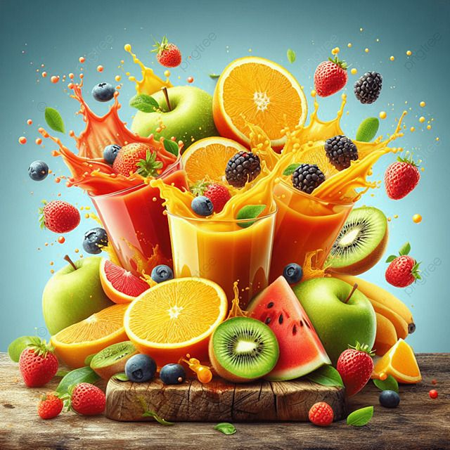
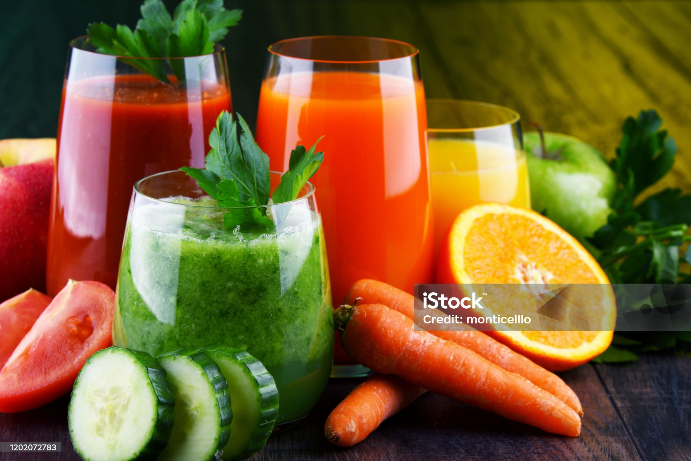

Fruit juice is a refreshing and nutritious beverage made by extracting the natural liquid contained in fruits.
It captures the vibrant flavors,vitamins, and minerals of the fruit, offering a concentrated source of essential
nutrients like vitamin C, potassium, and antioxidants. Popular types of fruit juice include orange, apple, grape,
pineapple, and pomegranate.While fresh, pure fruit juice can provide numerous health benefits, such as boosting the
immune system, improving digestion, and supporting heart health, it's important to consume it in moderation.
This is because even natural fruit juices can be high in natural sugars and lack the dietary fiber found in
whole fruits.To maximize the benefits, it's often recommended to choose 100% pure fruit juice without added sugars or opt
for freshly squeezed varieties. Would you like me to expand this into a more detailed piece or maybe focus on a specific type
of fruit juice?
